Actions are the most important part of an agent model. While Agents, Attributes and Spaces define what we're modeling, it is Actions that give the models life.
Actions allow the definition of behavior for agents at a very high level. You can think of actions as being analogous to methods in a traditional object-oriented model but that analogy only goes so far. In the same way that methods are defined as part of objects, actions belong to particular agents. (Though even more expressive ways of defining actions are contemplated in future releases.) In the next section we go into detail about what Actions are and how they can be used to define all agent behavior. They are also conceptually more challenging as unlike with structure they have no direct analogies to past agent representations.
An action provides simple, well-defined details that a model can use to determine what steps to take in model execution. That definition seems general enough to be almost useless, but its important to understand that an action is not equivalent to an instruction, a method or a query. In fact, actions can have aspects of all of these. But an action is not in itself an instruction specifying exactly how the modeling engine should do something -- instead an action represents what the modeler intends for the agents to do. (Technically, we might say that Actions takes a "declarative" approach instead of an 'imperative' approach, but that's not quite true, because actions do allow us to define behavior in a richer way than most declarative approaches, and many action constructs map directly to imperative approaches.)
Actions are connected together in a series of sources and targets. (Technically, an acyclic directed graph.) In an abstract sense that is similar to the way any programming language is defined although that structure isn't usually obvious because of the constraints of textual representations. But unlike a typical programming language, in Actions it is not the execution thread (the processor) that moves from one instruction to the next, but the result of the previous action. In this way, action results "flow" from the output of one action into the next action.
Why are these distinctions between traditional Object-Oriented and the Action approaches important? They give us the advantages of simplicity, clarity and flexibility that data-flow approaches like spreadsheets and some query languages have, but with less restrictions. At the same time, they can bring us much of the power and expressiveness of functional languages like Lisp or logical languages like Prolog, but without the level of complexity and obscurity that such languages can have.
We can get a better idea for how Actions work by thinking about how a spreadsheet works. In a spreadsheet, we might define a cell A that adds up a row of data, say "Income". We might define another cell C ("Profit") that takes A and adds it to another cell B that adds up another row of data ("Expenses"). Now, if we change a value in any of the rows, all of the other rows are added up and we get the results in A and B updated automatically. We never had to write code that said something like "for each cell in row X, where...". In fact, we don't really care how our Spreadsheet program adds up the numbers -- it could have added them all up at once but in backward order, or stored a running total somewhere and updated just the difference in value for the cell we changed -- what we care about is what the result is, and whether it is correct.
But Actions are much more powerful than a spreadsheet, because what is flowing from Action A to Action B is not just a number, but any model component such as a space or a set of agents that we need to use in target actions.
In this section, we'll describe how modelers can assemble actions into sets of behavior that accomplish complex tasks on interrelated agents and spaces over time.
| Before getting into the details of how each Actions work together, or the various kinds of Actions, it will be helpful to take a broad overview of how they all fit together. As discussed above, actions are strung together in a sequence or flow. They're always composed of two parts, though those parts can be assembled and intermixed in many different ways. First, we search for a collection of agents, and then we do something with that selection. We refer to these two parts as Selections and Commands. (For the technically minded, another useful way of looking at the Actions approach is as a Query Transformation language, as with SQL and Stored Procedures. Except again, the results of the queries along with the transformations flow through from one query to the next.) Selections find the agents we want to do something with, and the commands do it. We need some way to start the whole chain of actions off, and so we have a kind of Selection called a Root Selection, or simply a Root. Secondly, we need some way to actually make the agents exist in the model in the first place, so we have a Create Agents action. Finally, we have special commands called builders that allow us to create the spaces that the agents will occupy. The various actions are discussed in depth in the Details section. The diagram at the right depicts how actions relate to one another -- it does not include some actions that have been added more recently. |
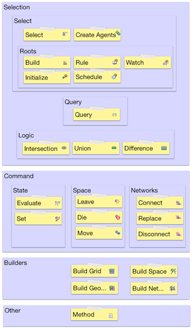
|
First, let's look at how actions define the basic path that agents take during a model run. As with any programming language, the path we take through the program specification is what determines our state when we get there. In a pure object oriented program, the path just defines the control flow -- what we are doing. The actual state of our model is defined within the object itself. If we call a method B from another method A, we'll be relying on method A to set the values that we need into the object state itself. In a purely functional program the path defines how we are going to deal with whatever has been explicitly passed in to a function that has been called, that is the function parameters. In fact, most languages such as Java combine aspects of both approaches.
In Actions, the path itself implicitly carries all of the context of prior execution with it. This means that we don't have to worry about storing context in the object -- as we would in an object-oriented language -- or passing the correct values from one method call to the next as we would in a functional language. Instead, Actions can use the implicit context of the path of flow to determine what the current state of execution is. An important aspect of the Actions design is that loop structures are not allowed -- that is, flows are acyclic. An action can never have an ancestor target (that is targets, targets of targets, etc..) that has as one of its ancestors that same action. As you'll see, actions don't typically need loop structures. By far the most common use of loops in conventional programming langauges is to loop through collections of objects. As selections (see below) refer to the entire collection of agents, any actions on a selection apply to all members of that collection. Recursive structures are needed for some particular usages and will be supported in future releases, but not through an explicit looping construct.
| Again, behaviors in Actions are always defined by a set of selections and queries. In the diagram to the right, we can see the pattern. First, we define a Root Selection for a Rule, Schedule or other triggering event. Then, we might add a series of Query and Logic Actions to define the specific agents that we are interested in. These are all part of the Selection. Next, we might define a series of Commands to determine what to do with those agents. Or, we could use the result of that selection to immediately define another selection, for example if we are searching for an agent that is near another agent. |
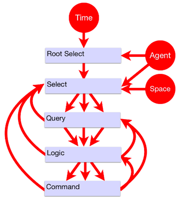
|
| The diagram to the right depicts a simple example. Here, we create a rule, and then check the results of two queries. For any agents that meet those criteria, we'll evaluate some function based on their state, and then set some value on them. |
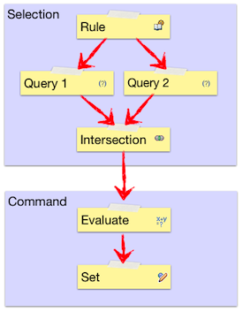
|
| In this next example, we'll first create the rule, and then create a new selection with a set of criteria. Finally, we'll do a move based on those queries. |
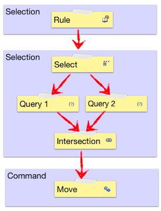
|
In the following example, we've defined a set of actions and their relationships. We have a selection, a few queries and a couple of logic operators leading to a Set Action. We'll describe in detail below how Logic Actions are used in conjunction with other actions to assemble any kind of query structure needed. But for now, we'll focus on the control flow itself.
As you have probably already guessed, the agents that have the Set Action applied to them could take one of two paths through the Action flow. Readers with experience with programming or formal logic will note that this looks just like a parse tree, and while that's basically what it is, there are important differences. For example, if we looked at the following structure as a definition of control flow for a single agent we'd take them to be equivalent. Both would evaluate the statement (Query 1 AND Query 2) OR Query 3 for each agent.
Within Actions in many cases these two approaches will also act equivalently. If we are simply setting a value, it doesn't matter how an agent gets to that Set Action, as long as it gets there. All sources that flow into a given target Action act like a logical union since any of the paths might reach that target. But note that we have two flows moving in parallel in the flow on the right. What happens when the conditions for both branches are true? As the set of agents flow through each branch the Set Action on the left will be evaluated once, while the one on the right will be evaluated twice. Again, this often ends up with the same behavior, but not always. If for example, the evaluate Action uses the value of the attribute that we are setting as input, we can get different results. Of course, you can write code in any language that accomplishes the same thing, but the code will look quite different. For example, if we wrote the same basic logic in Java, in the first case we'd have something like:
if ((query1.evaluate() && query2.evaluate()) || query3.evaluate()) {
doSomething();
}
In the second we'd have:
if (query1.evaluate() && query2.evaluate()) {
doSomething();
}
if (query3.evaluate()) {
doSomething();
}
This is a simple example, but with multiple branches such code design issues can quickly grow complex. The flow approach allows us to express things in a way that is often more natural and expressive. The important thing to keep in mind when desiging action flows is to see the flow as representing a selection of agents moving through streams independently. In the Actions example we expressed both approaches in nearly the same way, except in the case on the left we used a Union Action to bring the two branches of flow back together.
Selections are a key concept in Actions. Put simply, selections define what we are searching for and where. They are defined by a combination of Select, Query and Logic Actions. Each time we create a new Select Action, we define a new selection. Queries can be used to further refine selections either immediately after or later in the Action flow, as described in the next section. Logic Actions are used to combine and organize the Action flow defined by Query Actions. In order to understand how these three pieces work together, we need to understand the idea of selection boundaries.
| A selection boundary determines the set of selection actions that are used to determine what agents to apply target actions to. For example, in the following diagram, we can see the extent of the boundary for a straightforward selection. |
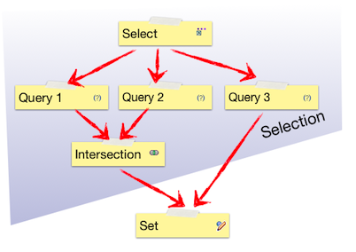
|
| Each time we create a new selection, we define a new set of boundaries. In the diagram to the right, Selection 1 and Selection 2 eaach start with a new Select Action. |
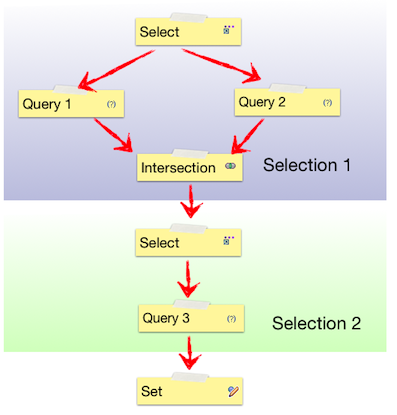
|
But boundaries can be defined for a group of actions by a Query Actions as well. This is because Query Actions can be directly part of a selection definition, but they can also refine selections. We'll see how that works below. So where does one selection boundary end and the next one begin? The simple rule is that the end of the boundary is defined for a given Action by the place where:
A Query Action is not followed by a Logic Action, or
A Logic Action is not followed by another Logic Action
| In other words, as soon as a Logic Action occurs in a path leading to an Action, any following Query will define a new boundary, as shown in the example to the right. |
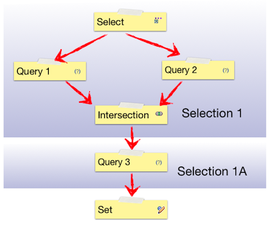
|
Note that we refer to "Selection 1" and Selection 1A". This is because Selection 1A is a refinement of Selection 1 along its particular path of flow. When a query appears for the same selection but past a particular boundary, you can think of it as a sort of filter on the selection contents. We don't have a "Selection 2" here because any Actions that refer to "Selection 1" along the current path of flow will be acting on the selection defined by Selection 1 and Selection 1A.
These rules allow actions to be defined in the simplest possible way, but it is important to understand their implication as they result in behavior that can be different from what someone used to and imperative programming environment such as Java might expect. In a simple case the distinction might not matter. For example, if we are using a Query 1 to test whether an agent's attribute a == x and attribute b == y, we would get the same outcome if we placed intersected the queries as if we simply put them in sequence. Internally we would actually be searching for agents with a == x, and then taking those agents and choosing those agents with b==y, but the outcome would be the same. But consider a more sophisticated case, where we are searching for neighboring available cells.
In the first case, we execute a search for all agents that meet the two criteria. This means that if there are any neighboring cells which are available, we're guaranteed to find one (random) cell. In the second case, we first search for all cells that are neighbors. This will match any agents that include both available and non available agents. Now, at this point since our search returns one agent (in the current AMF design -- richer behavior will be supported in the future) the randomly selected agent could be either available or not. So in the second case, we might end up with no cell to move to, and thus make no move at all. This then becomes an important aspect of model design. For example, if one were defining a model where neighbors played a game with each other, one might want to instruct agents to play the game only with neighbors that have a certain wealth threshold. In the real-world situation that we are modeling, we might simply search for neighbors who are over a given wealth threshold and then play the game with them. This would imply that information about other agent's wealth is open knowledge. Or, we might simply select a random neighbor, and ask that neighbor to play a game with us. Upon discovering that our neighbor does not meet our wealth criteria, we would then choose not to play with them. Here we are modeling a cost in time to obtain information about another agent's wealth, because we might miss an opportunity to play the game with another agent on that round.
| Now, let's put the concepts of Actions sequences and boundaries together to see how we can easily define complex interactions between multiple selections. When we define a Select, the state of its selection flows through and with any subsequent selections. So for example, if we have a Root Action rule, and then do a selection based on it, we'll have access to the agent from the original context as well as all of the subsequent selections. We can refer to any previous selection for any subsequent action. For example, instead of setting the value for the rule agent, we might instead set a value for an agent we've found in a target selection. |
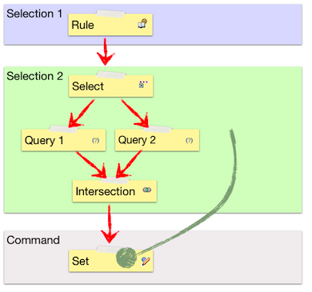
|
| Inputs to functions also use selections. (We'll discuss more details in the functions section.) In the following example, we're adding the wealth of the Selection 1 agent to the wealth of the Selection 2 agent and using that value to set some other value. (Here, perhaps we are modeling an agent in a winner takes all game, in which case we'd also add a Set Action on Selection 2 and set the second agent's wealth to 0.) |
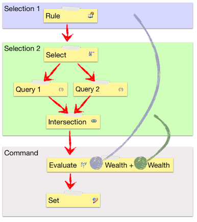
|
| But we can also use selections in defining Query Actions themselves. So in the following example, we select a neighbor agent and then compare the age of our Rule agent with the age of the Selection 2 agent. If and only if those ages are the same will we execute the target Set Action. This example also demonstrates why we refer to the data flow as weaving. Query Actions can be used to refine selections at any point in the data flow. Selections and their uses are interwoven throughout an action sequence. |
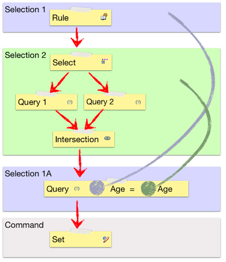
|
| Finally, we can put all of these concepts together by weaving selections together with flows. As we discussed in the flow section, if we use multiple paths in the Query, the agents that flow through from any prior Query can follow multiple paths at once. And as we discussed in the selection section, the selection and its boundaries determine what agents we will be working with at any given evaluation point in the flow. Consider the example to the right. As we'll see in the detailed explanation of each Action below, Transformation Actions such as Move or Connect take multiple selections. The first selection defines the set of agents that will be performing the action. In the case of a Move agent, this refers to the mover. The second selection, which for Move we call "destination", refers to the selection that will be receiving the action. In the case of movement this is the agent or location that the Rule agent will be moving to. If we follow the flows through, we can note two important outcomes of our model design -- a Rule agent might move twice if it meets the criteria for both the blue path and the red path and that it might move to a different location each time. |
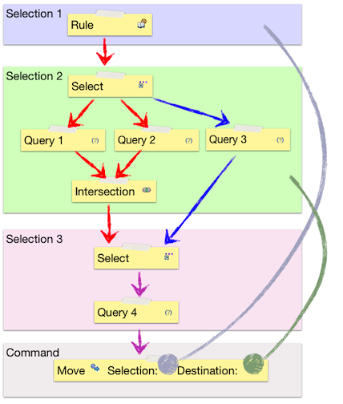
|
| In this section, we'll dig into the specific role of each of the Actions. From the design discussion we hopefully have some sense of how these all fit together in general. Again, the block diagram to the right provides an overview of how the various actions are related, but it is missing some of the more recent actions such as Diffusion, Perform, Derive and Cause. You might want to take a look at the meta-class diagrams in the reference section as well. |
|
A selection defines a particular set of agents that we want to do something with. Selections are made up of the Select action itself, along with Query and Logic actions. When we refer to a selection in any target command, we are referring to the selection in the context of where we have defined the behavior.
As we discussed above, when we refer to a Select, we're actually referring to the selection as a whole leading up to the current action. The Select Action itself is used to define what we are searching for (Agent), where we are searching for it (Space), and from whose perspective we are doing it (Selection). Create Actions are a special kind of Select Action that are used to create agents. See the description in the Builders section below for more information.
The selection that we are searching "from". This seems to be the concept that new users have the most difficulty with, but it is key to understanding how Actions works. Just as with any other Action -- a Move command for example -- a selection needs to know what set of agents that it is working with. For example, if we want to define a selection B that finds the cells neighboring a rule B's agent, we would set selection B's selection to A.
Here we define what agent we will be looking for. In order for this to make sense, the agent has to be related in some meaningful way to the agent whose behavior we are defining. For example, it might be a partner agent or a location that we might want to move to. An agent must be specified unless we are searching within a continuous space, in which case this value should be empty, and the result of the selection will represent some location in that space. In the current version of the framework, we treat destination cell locations as agents, and require that location to be specified as a target agent, but in a future version we'll allow searches without defining an agent within grid spaces as well.
The space that we want to search within. Of course, this must be specified if we use any spatial query terms (see below), but if we simply want to search across all agents it should not be specified.
Represent Queries (Controls) on agents and Transformations, or Commands, on the result of those queries. Queries, Transformations and other in which each child target carries the execution and data context for it's particular path.
A Query represents a concrete criteria for our search. The name is a bit confusing because of potential for confusion with a generic query. Queries -- along with their cousin Evaluators -- define a function that is evaluated and that can take Agent attributes and the results of other Actions as input. Queries are combined with each other and with the logic actions to determine the results of a selection for their direct target actions.
As with all other actions, evaluations specify a selection, and just as with the other actions, this determines the set of agents that the evaluation occurs for, but the input selections determine what agent is used for the calculation itself.
A query function is evaluated to determine the results of a particular selection. Functions can represent very simple search criteria such as "My Age == Your Age", but they can also represent complex and inter-related concepts such as spatial relationships. They must return logical values. See the functions section for more information on specific functions.
The set of values that will be used to determine the result, in the order specified by the function prototype. Inputs can specify any source evaluation and any agent state or agent parent context state. They can also be literal values -- see the section on literals below. The selection determines which agent's will be used to determine the value, and different inputs can specify different selections.
These Actions provide us with the ability to combine queries with one another, and follow the basic rules of set logic. But as we've seen above, it is important to understand that there are important differences between Logic Actions and typical programming logic. Most importantly, they apply not to individual agents per se, but to the set of agents that move through them. Also, there is not neccesarily short circuit execution (it's not needed) and much richer criteria can be joined together because of the action flow design.
An intersection contains only those agents that match all of its source actions. This is essentially equivalent to a logical AND statement and has similarities to an && operator in a java "if" statement. An agent must be able to flow through all incoming actions in order to flow out of an Intersection Action.
A union contains all agents that match any of its source actions. This shares similiarities to a logical OR statement and the || operator in a java "if" statement. It does mroe than that however, as it acts to join multiple flows of action. That is, as set logic implies, an agent will never appear in the result of a union more than once.
A difference contains all agents that do not match any of its source actions. This essentially equivalent to a logical NOT statement, and has similarities to the Java else statement. Like the Union Action, difference implies that a given agent will only appear once in any subsequent targets. No agents that reach a Difference Action will flow through to the next action(s), and all agents (that meet the definition of the Select Action) that cannot reach that action will.
Root actions are a special case of a selection. These represent behaviors that are defined for all members of agents; these are the highest granularity of an agent's behavior, such as "Find Partners" or "Eat" or "Reproduce". When you want to create a new set of Actions, you have the following choices.
The Build Action is a specialized action that allow the construction of member agents and spaces within a parent context. A Build Action executes once for each context before any initialization actions occur for any children agents of that context. Currently it is undefined whether a context's own Initialize Action is executed before the Build Action occurs, so implementors should not rely on any initialized values being available at build time.
An Initialize action is executed once and only once for every agent when the model is first started -- at time 0. Initialize Actions are guaranteed to execute before any other non-builder action occurs.
A Rule executes once for every agent for every iteration of the model. An important note is that the actual sequence of rules is technically undefined. An implementor should not rely on the fact that a rule occurs before another rule in the list of agent actions though typically the order in which the rules were actually created is respected.
A schedule is executed on a recurring basis, according to the values detailed below. Note that schedules are often overused. In most agent-based models it makes sense to have any behaviors occur at the same granularity using a Rule. Please note that Schedules are not currently supported in the Escap target, but that support should be available soon. In the following descriptions we refer to period as the current iteration of the model, that is where time == t.
The period that the schedule will first be invoked. For example, if this value is 100, and interval is 1, the schedue will be executed at times 100,101,102..
How often the schedule is invoked. For example, if this value is 3 and start is 1, the schedule will be executed at times 1,4,7..
Where the rule will be placed in the execution queue for a given time period. For example, if Schedule A's priority is set to 3 and Schedule B's is set to 2, Schedule B will be executed for all agents before Schedule B is executed for any agents.
A Watch is executed any time the watched value is set for any agent. Note that the Action will be triggerred even if the state is simply set back to the value that it already has. It is important to be careful about creating Watches that might set the values of other Watch actions which might in turn trigger this watch. To clarify, if a modeler creates a Watch A for attribute a, and creates a target Set for it for attribute b, and Watch B is watching attribute b, then if Watch B has a target Set for attribute A, a circular execution could occur. This would cause the model to get stuck in its current iteration. To help model developers avoid this case, a warning will be provided if such a set of circular watch dependencies is created.
A Derive action is a unique kind of root that is used to determine that value of a derived attribute. There can be one and only one Derive action for each such attribute. One of the benefits of a derived action is that unlike a standard attribute, it only needs to be calculated when the value is actually needed and its inputs have also been changes -- allowing signifcant performance optimizations to be made. Derived actions can also make model behavior much more clear. Derive actions are especially useful for calculating dependent measures for model agents. These in turn can be used directly in charting and data output tools -- leaving no need to configure your chart view calculations seperatly. Developers need not worry about overhead and should feel free to create as many derived attributes as might be neccessary. The "gather data" value of the derived attribute can always be set to false to prevent data collection overhead when they aren't needed.
The derived value will always simply be the value of the last evaluation in a particular flow. You can mix queries and even selections on seperate agents into a derived value. The only restriction is that the type of the last Evaluate actions(s) must match the type of the value. If there is no path leading to an Evalutate action for a particular agent state, the attributes default value will be used.
The diffuse action provides high level support for the common behavior of diffusing some value across some lattice space. For example, heat may spread over time from one grid cell to the next. (There are actually significant issues involved in implementing this through lower level actions.) To specify that a value should diffuse through a space you simply need to provide the following values. This action does not need and shouldn't include target actions. The "Heatbugs" model in the org.eclipse.amp.amf.examples.escape project provides a good example for how diffusion can be easily implemented into any grid model.
The rate at which any given cell's attribute value is transferred to surrounding cells.
A Perform root action simply defines a set of actions that have no independent trigger. The only way Perform actions can occur is if a Cause action specifes one as a result. Performs then are similar to sub-calls or helper methods within a traditonal procedural or OO language, and can be very helpful in organizing and simlplifying code. Note that whenever you use a Perform instead of directly specifying a set of targets you lose the context of the selection. You couldn't use a Perform to directly trigger a move as the selection source for the move would not be available.
Builders are a special category of actions that are used to create spaces. They should not be confused with the Build Action itself which is a root selection that defines the time at which builder actions should occur. Generally speaking, specific Builder Actions for spaces and Create Actions for agents are targets of Build Actions.
Agents are crete using the Create Agent action. The Create Agent Action is actually a special kind of Select Action that is used to actually create agents rather than simply search for them. Other than this capability, a Create Agent action can be used just like any other action except that Query and Logic actions aren't needed or genrally appropriate as this action defines a set number of agents to perform an action against. Create Agent actions have the special feature of being usable from the containing context, so that contexts can create initial agent populations before any agents exist within the context to perform actions against. But they can also be used directly within agent rules, for example to create a child agent as the result of a reproducation rule. Note that Initialize Actions are not performed on agents that have been created within a model during regular (non-initialization time) execution. If the model creates actions during the regular model run, any state initialization should be handled by the targets of this action directly. (Naturally, if the enclosing context is used to create agents at the beginning of a model run, then the Initialize action is used as part of the normal model life-cycle.)
The selection to use as the basic for this selection. This is generally not important except to define control flow.
Not generally relevant for agent actions, as agents are not placed into a space unless explicitly moved to that space. Potential associations between agents and spaces are defined by the space building actions.
The number of agents to create. If used as part of an enclosing context's Initialize Action(s) an Attribute parameter will automatically be created. If not, then an evaluation or agent attribute should be used to define this number.
Creates an agent that has a particular shape extent within some continuous (i.e. vector as opposed to raster) space. This action performs just like a Create Action except for the following attribute:
Determines how each agent's spatial extent will be defined. The actual form of that shape is implementation specific. For example, in a GIS space (the immediate rationale for this Action) a polygon represents a region on a map and the extent of that shape might be determined by a .shape file. The available shape types are:
A simple point in space, fully equivalent to a standard continuous space location.
A single line within a continuous space. Technically this represents a line segment as it is expected to have a beginning and ending point. In the future, this might refer more generically to planes in three dimensional space and hypersurfaces in n-dimensional spaces, but this is currently not supported by any AMF target implementations.
A region within a space defined by an arbitrarily large set of line segments. Potentially this could be used to refer to polyhedrons in three-dimeensional space, or even more genrally as polytopes, but this is currently not supported by any AMF target implementations.
Imports and creates a set of agents from some input file. The actual form and manner of the import is implementation specific but should be inferrable from any source file based on the URL provided, assuming that the target platform or the AMF platform supports the appropriate imput type. For example, a Tab-CR delimited file might be used to populate a set of agents with various attributes. Additional meta-data could be provided by the URL, but we will likely add additional extensible meta-data to this action to better support the definition of expected input types and routines from within an AMF model itself. This action is equivalent to the Create Agents action except for:
Combines the properties of the Create Shaped Agent and Load Agent Actions. The source url should of course specify an input format that supports the shape type specified. See the descriptions of the related actions for more details.
Creates a network, i.e. a graph structure, supporting the establishment of edges between arbitrary nodes.
Specifies the set of agents that can exist within this network. Agents must be included here in order for them to make connections within the network but agents included here are not required to have connections within the network, nor are such connections created for them. (See important note regarding network types below.)
Deprecated. This feature is only currently supported for Repast targets and is likely to be removed from future versions of the AMF meta-model. Future AMF implementations are likely will provide a different mechanism for instantiating and importing network structures either within the network defintion or through other Action definitions. Instead of using this feature, modelers should create specific networks by building them up with Connect Actions for indivdual agents. For example to create a small world netowrk, a modeler might create random links between agents and then replace or augment those connections.
Creates a grid space.
The set of agents that might exist as occupants of this grid; that is, members of individual cells within a given grid. Agents must be included here in order for instances to exist within the space, but agents included here do not actually have to exist within the space. (In the Repast implementation, all agents technically are memebers of the spatial projection, but are not required to have valid coordinates within that space.) For example, in an agriculture model these might represent agents moving about and harvesting plots of land.
The agent that will be used to populate the grid itself. A gird is guranteed to contain one and only one fill agent within each grid locaiton. The grid will be populated with instances of the specified agent and these agents cannot move, leave or die within this space. This value need not be specified -- if left blank a default cell without any state will be used. For example, in an agriculture model, this agent might represent a single plot of land.
Creates a continous space. The actual dimensionality and other qualities of the space are currently defined in the space itself though this might change in future versions. All other values are used in the same way as for the gird and other builder actions.
The set of agents that might be a part of this space. Agents must be included here in order for instances to exist within the space, but agents included here do not actually have to exist within the space. (In the Repast implementation, all agents technically are memebers of the spatial projection, but are not required to have valid coordinates within that space.)
Constructs a geographical space. All details of this space are specfied by the implementation, i.e. a specific geographical imported space. Generally these would be defined by a Create Agents action; that is a set of imported agents representing US states would also represent the overall space of interest.
Evaluate Actions define some calculation on a function based on the model state and a set of input(s). The inputs that an Evaluate Action can take is determined by its functions and can be either agent attributes, prior evaluations or literals. The result is then determined based on those inputs. In some cases Evaluate functions can be used to determine some action indirectly, such as with a graphics fill, but they can never be used to directly change model state.
As with all other actions, evaluations specify a selection, and just as with the other actions, this determines the set of agents that the evaluation occurs for, but the input selections determine what agent is used for the calculation itself.
A with queries, a function is evaluated against its input set. Functions can represent simple operators as well as complex functions. See the functions section for more information on specific functions.
The set of values that will be used to determine the result, in the order of the function prototype. Inputs can specify any source evaluation and any agent state or agent parent context state. They can also be literal values -- see the discussion in the Tools section. The selection determines which agent's will be used to determine the value, and different inputs can specify different selections.
The Set Action assigns some value to another value.
Here the selection refers to the agent that we want to change. This does not have to be the immediatly preceeding selection but can be any accessible selection.
The attribute to modify. It must be a member of this action's agent or of that agent's parent context.
A Cause Action "causes" some Root Action to occur upon the specified selection. This action can be extremely useful for organizing model behavior and preventing the need for creating duplicate action definitions.
Cause actions also support recursive functionality and "WHILE" behavior. These can be used to mimic loop strucutres. For example, you might want an agent to execute some behavior as long as that agent has energy remaining. To accomplish this, you could create a query for "energy > 0" and then create a Cause target with the root action as its results.
Note that you should be cautious and thoughtful when using the Cause action. Remember that selections represent sets of agents and thus get rid of the need for collection loop strucutures -- such as Java "for each" -- common in traditional programming languages. You should be able to do almost anything that might require a loop strucutre using the selection mechanism itself. Also, just as with a traditional language, you should be careful about defining cause actions that trigger their own root actions or that cause other actions to in turn trigger the orginal root action. You can easily end up defining infinite loops in this way. (In the current implementation this will eventually trigger a stack overflow error as cause invocations are recursive, but future implementations will be able to infer target language loop strcutures to prevent stack depth issues.)
The Move Action causes an agent to change its location in some space or network. The agent will leave whatever location it was in before within the selection space, and move to its new destination.
As in any other action, the selection determines what agent is affected -- in this case the agent that is being moved.
Causes the agent to leave a particular space.
The selection determines what agent will be leaving and what space the agent will be leaving. If the agent doesn't exist in that space nothing will happen.
Causes the agent to cease to exist within the model as a whole.
Connects two agents within a network space. This Action is not applicable for any other kinds of spaces. Note that unlike with other transformational commands, we do not use the destination space to determine the space that will be impacted by the Action. This provides a more efficient representation without any loss in generality, because it allows us to search for a source and target agent within other spaces and then create a connection without creating a separate selection. As the important structural feature of networks are the relationships themselves, not the nodes this provides a more direct way to specify these relationships.
The selection determines the agent that will be connected to another agent. In the case of a directed graph, this is the source node.
The destination determines the agent that the selection agent will be connected to. In the case of a directed graph, this is the target node.
Determines whether the connection made is directed or not. If true, selections from source agents will include the target, but target agent selections will not include the source agents (unless they are connected through some other path).
Removes the connection between agents within a network space. See the description of the Connect Action for important details.
The selection determines one other side of the agent relationship that will be disconnected.
Functions in the same way as a Connect Action excepth that all other connections to other agents will first be removed.
The selection determines the agent that will be connected to another agent. In the case of a directed graph, this is the source node.
The destination determines the agent that the selection agent will be connected to. In the case of a directed graph, this is the target node.
The Method action supports inclusion of arbitrary code within a generated method. Generally, this will be Java code as all of the current target platforms are Java-based but there is no technical requirement that it must be. For example, if a target has been developed to produce code for Swarm running on an iPad (and no, there are no current plans to support such a thing, though it would certainly be cool!) then the modeler could define Objective C code for the method.
Please note that the Method Action should be avoided whenever possible. You should consider using it only in the case where there doesn't appear to be a way to construct equivalent functionality using the native Actions framework, such as when interfacing with third party APIs. The aim of Actions is to provide the most general support for Agent Modeling possible without compromising the core design. Any use of native Java code strongly limits the set of platforms that your model will be able to generate code for and prevents you from using the AMF edit tools to explore the model behavior. In the case where you wish to construct a model feature and believe that it isn't possible or practical to do it with Actions, please contact us (see support section) so that we can suggest how you can accomplish what you want within Actions. If that is not possible, we'll consider developing new features that will support what you want to do.
On the other hand, you may simply wish to use the Agent Modeling Framework to build a scaffolding for your model -- perhaps using your own custom Java framework for example -- and Method would be a good way to accomplish that. Also, note there are a number of other approaches to mixing hand-crafted Java together with AMF generated code. Please see the Programmer's Guide section "Integrating Java and AMF Models" for more on that.
If you do decide to use the Method Action, keep in mind the following design practice recommendations:
Keep your usage of external API references to a minimum. If you can use only code provied by the core Java classes as well as the Apache Collections library, your code should work on every current Java target. On the other hand, if you make use of a specific ABM platform APIs your code will obviously only compile and run against that target.
Code should be in the form of a method body, excluding the signature. A single Java method is created using this code body. There is no support for input parameters -- if you need access to evaluated values from source actions, create agent attributes for them, set their values for the selected agents, and use them as sources for your Method Action.
All Java class references should be fully qualified. For example, if you wish to use the eclipse Draw2D Graphics class, you should refer to "org.eclipse.draw2d.Graphics", not simply "Graphics". If classes are not fully qualified, you will recieve compile errors. You can usually easily fix these by selecting your source code directory and choosing Source > Organize Imports.. but it prevents automatic code generation.
The method interface has no support for code completion, syntax checking or other common Java development environment features. You can avoid code maintenance and even support targetting multiple APIs by using the following technique. From your method body, call a helper method in a seperate class. The referred class could use a static method call, or you could instantiate the class and call a method against it, passing in the agent class so that the helper class can reference the agent's state. For example, if you wanted to use some custom java code to import agents from a specialized input file, you could put the following code in the Method Action body for the root Context:
(new org.me.SpecialFileLoader()).load(this);
Then create a new source directory in your project called "src" ( New > Source Folder...) and create the class for the specialized file loader including the following method:
public void load(MyRootModel model) {...}
This approach allows you to a) maintain the working code using the Java Development Environment, b) avoid changes to the Method Action within the model, and most importantly, c) allow other implementations of the code using multiple APIs. For example, if you need to create a specialized graphics routine, you could create seperate implementations for your Escape (Eclipse Draw 2D), Ascape (Java Swing), and Repast (Simphony API) and place them in the appropriate projects. As long as the different Java source files have the same names and signatures, they will all compile correctly and execute the appropriate behavior.
The selection determines what Agent class the code will be created within and the set of agents the method will be called upon.
The actual code to insert in the method body. See the detailed recommendations for code use above.
Query and Evaluation Actions are both "Sinks" which means that they are capable of containing inputs. When you select a function, the appropriate number of inputs will be created. After selecting a function, you can view and select the inputs. The choices for the inputs will be constrained by the type of the function and the other operands you've selected.
Inputs can take literal values; that is values that you specify simply by entering them directly into the query. In general it is useful to think of literals as similar to local variables in a conventional programming language, whereas attributes are analogous to member variables. (And this is how they are represented in the generated Java code.) As with local variables in model code, literals are not recommended for any values that can change model behavior. The value cannot be easily accessed or changed by other model users. For greater transparency, you should instead create an Attribute with an appropriate default value, setting the "immutable" value to true. Still, literals can be useful for values that are special cases related to the evaluation or query, such as an input code, and for quickly prototyping functionality.
The following diagram may be helpful to readers familiar with UML and Meta-modeling:
In the diagram above, all meta-objects except for Input, Literal, and the enumerators (lists of options) are Actions. Blue meta-classes are concrete (you can create and use them directly). Red meta-classes are key collaborations.
An Act is anything that might happen during the execution of an Agent-Based Model.
All Actions have as their root-most source action a Root. These are added first to any agent behavior and act as triggers for all target behavior. For example, a Watch will execute any time the watched attribute is modified. (As the diagrams do not refer to elements outside of the current package, we cannot see here that Accessor includes a reference to some Attribute, but it does. To see these kinds of relationships you will want to refer to the metaabm.ecore file itself.)#Actions are targets and sources of one another, but an Act can never have itself as a source. (That is, Actions are acyclic, but branches can re-converge. When we refer to an Act source or target, we typically mean to include all ancestors or descendants, not just the immediately connected Act.)
All Actions (except for root Actions) reference a Select, referred to as the "selected" relation. An ASelect represents the model aspects that the Act is working within; that is, the spatial, temporal and type (agent) "world" that is currently being selected.
Commands trigger some model state change (Set) or spatial transformation (Transform).
Controls determine whether target Actions are executed and against what agents. They are in some sense query terms and include Query actions and Logic Actions.
Transforms also specify a "destination" Select. This represents aspects that the selected agent(s) will transform to. For example, a Move may use a Rule to select all SugarAgents (type) in the SugarGrid (space) every period (time) and move them to a destination of a neighboring SugarCell (type) in the SugarGrid (space, with time implicit).
Sinks are Actions which use some Function (see next section) to interpret state in the form of Inputs. Inputs can come from selected agent attributes, other Actions, or literal values.
In this section, we'll look at an example that should make clear how the basic Actions approach works in a model. Say we want to define a behavior like:
"Search for a random agent within my vision that is the same age as I am. Find a location next to that agent that is not already occupied and move to it."
Here, we create a sequence of actions like so:
Select every agent for every period of the model. ("Find Partner" Rule)
For every member of that selection, search for other agents of the same age within vision distance. ("Partner" selection.)
From "Partners" find a random member and search for a neighboring locations. ("Partner Neighbor" selection.)
Finally, move the agent in "Find Partner" to the "Partner Neighbor" location.
Now, notice that although it's convenient to speak as if there is only one "Find Partner" and one "Partner Neighbor" in step 4 above, in fact selections are flowing through for each of the results of each of the previous action sequences, and we can refer to each of the directly. We could represent these behaviors in many different ways. For example, we might want to specify the model in a (hand-drawn) graphical language or in a (made-up) textual language:
This is how it looks in an actual model:
And here is how this works in detail:
Create a Rule that will trigger the behavior. In this case, we want this rule to apply to all "Individual" agents within the model. (Space isn't relevant in this case.
Create a child Select Action that will find our partner. Two important things to note here:
The selection occurs based on the "Find Partner" selection. This means that for each Individual in the model, we'll be searching from the point of view of that agent to some other selection of agents.
We also need to define what type of agent we want and in this case the space does matter. We want to find an agent that is nearby within the City space. If instead we wanted to find a partner in a social network, we'd specify that instead.
Create two child Query Actions:
We want to search for someone who is the same age as us. This highlights the importance of the idea of the Selection in the Actions design. We're qualifying Age by the rule agent's partner for the first input and by the rule agent for the second. The selection carries throughout the flow of execution and this context is an explicit part of the entire structure. Note that this is very different from the way control flow works in a traditional imperative language such as Java.
We also want to search using a function for nearness, "within", which takes a parameter of vision. Note that the spatial functions are all polymorphic -- if we decided later on that we would rather search within say "Kevin Bacon space", that is a graph structure representation of space, we would only need to change the space we've defined in Select Partner.
Intersect the results of these two query components. This delineates the end of the selection definition for any target Actions.
Select a neighbor. Again, we can see the importance of Selections. Here, we are selecting from the point of view of the partner, not the initial agent that the current Rule is being executed for. Note that this time our target agent is a "Block", that is, a location within the city.
As above, define some queries. This time we want only those agents that are:
available, and
neighbors of our partner.
And another intersection..
Finally, we move to the location we've found. All that's required at this point is to specify:
The movement selection, or those agents that are moving, which in this case is the original agent we're executing the rule for, and
The destination, which is the cell that we've found. Note that the framework infers from the space definition that the Block agent is capable of hosting the Individual.